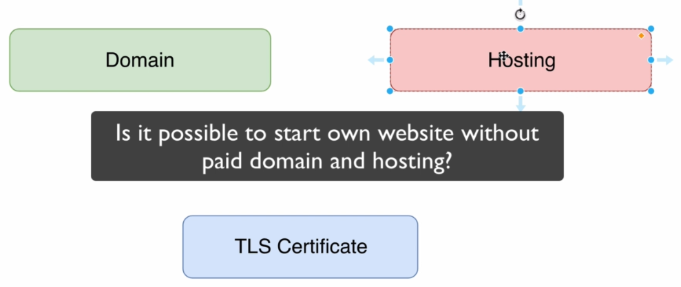

-->free domains will be usually subdomains and such free domains usually come with pre-installed TLS certificate
------------------------------------------------------------
TLS-->is the protocol
ECDHE_RSA-->elliptic curve diffie hellman exchange and it means that the keys will be generated using elliptic cryptography, that will be used for actual encryption of data(AES_128)
RSA-->it means private key in server will be used for signing packet on ECDHE phase
AES_128-->is the length of the key be used for data encryption, we don't use RSA in ecryption of data because it will be slow
GCM-->it's mode of operation of encryption protocol, for AES there two modes of operation GCM(Galois/Counter Mode) and CBC(Cipher Block Chaining)
-->in CBC the encryption of next packet is based on previous packet and that's why receiver of the packets when it receives them should reorder them in the previous order and only after that it will be able to decrypt them
-->in GCM mode there was no such a dependency and each packet in a section is encrypted independently
SHA256-->means that SHA256 will be used for ensuring data integrity
OCSP-->Online Certificate Status Protocol, this protocol is used for revocation check of certificate
CRL-->Certificate Revocation list
-->if certificate compromised anywhere you are able to add you certificate, actually it's serial number to list of revoked certificate and after that you are able to send request by OCSP protocol to check whether a particular certificate is present in the certificate revocation list or not